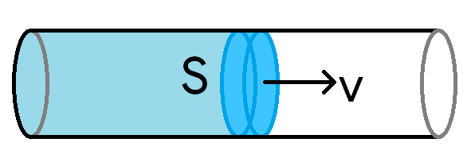
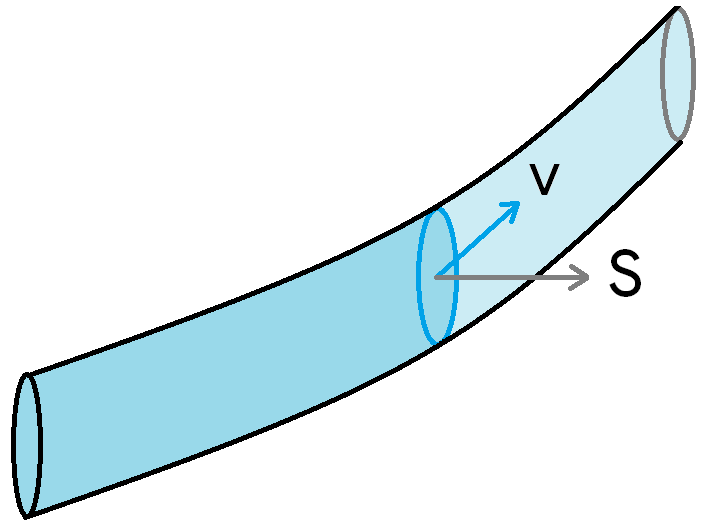
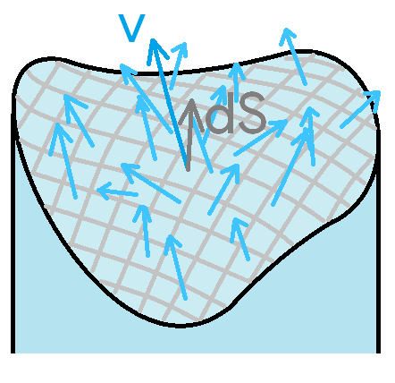
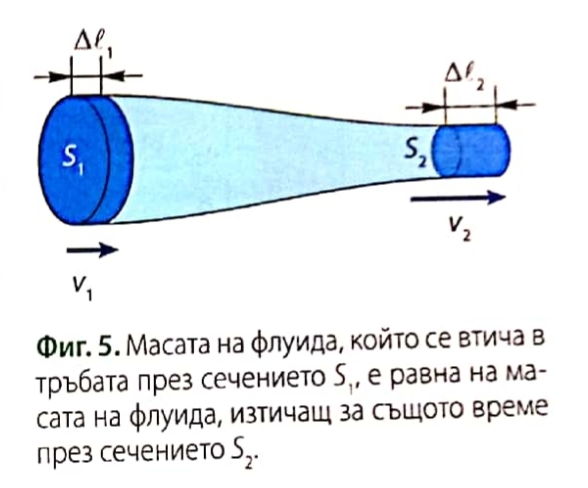

-
Структура на движението
а) токова линия - крива, която е допирателна във всяка своя точка към скоростта на флуидна частица в същата точка
- стационарен флуид - флуид, чиито токови линии остават непроменени във времето
б) токова тръба - повърхност, съставена от токови линия
-
Видове движение на флуид
а) ламинарно течение - постоянен поток на флуида, чиито отделни слоеве не взаимодействат помежду си
б) турбулентно течение - хаотично движение на флуида, което започва след достигането на опрелена скорост
- колкото по-висок е вискозитетът на флуида, толкова по-трудно той може да тече турбулентно
-
Поток ($\Phi_{\vec{v}}, [\frac{\text{m³}}{s}]$) - обемът флуид, който преминава през дадено напречно сечение на съда за единица време
$$\Phi_{\vec{v}} \overset{\text{def}}{=} \frac{dV}{dt}$$
a) скоростта на флуида е перпендикулярна на сечението и еднаква в рамките на него: $\Phi_{\vec{v}} = Sv$

Доказателство:
За време $dt$ флуидът изминава път $ds = vdt$ и изтеклият флуид през сечението $S$ сега се намира в цилиндър с обем
$$dV = S, ds = S \cdot (v,dt)$$
б) скоростта сключва ъгъл $\alpha$ с перпендикуляра към площта: $\Phi_{\vec{v}} = S v \cos\alpha$

Доказателство:
Потокът е същият като през проекцията на площта $S$, перпендикулярна на скоростта.
$$\Phi_{\vec{v}} = vS_{\perp}$$
Тъй като ъгълът между равнината на $S$ и равнината на $S_{\perp}$ е $\alpha$, $S_{\perp} = S\cos\alpha$.
Ако въведем вектор на площта $\vec S$ с големина $S$ и посока - перпендикулярна на площта, то
$$\Phi_{\vec{v}}= \vec{v} \cdot \vec{S}$$
в) произволна крива повърхност, различни скорости в рамките на повърхността: $\Phi_{\vec{v}} = \int_S \vec{v}\cdot d\vec{S}$

Доказателство:
За всяко безкрайно малко парче от площта $dS$ може да приемем, че е приблизително плоско и скоростта $\vec{v}$ е еднаква в рамките на парчето. Тогава потокът през това парче е $d\Phi_{\vec{v}} = \vec{v}\cdot d\vec{S}$. Целият поток е
$$\Phi_{\vec v} = \int_S \vec{v}\cdot d\vec{S}$$
-
Уравнение на непрекъснатост - потокът на идеален флуид е постоянен
$$\Phi_{\vec{v}} = \text{const} \implies S_1v_1 = S_2v_2$$

- през по-тесни участъци флуидът тече по-бързо
Доказателство (с щипка лъжи):
Идеалният флуид е некомпресируем - между двете напречни сечения не може да се струпва маса, защото това би променило плътността
-
Уравнение на Бернули - закон за запазване на енергията на идеален флуид
$$\frac{1}{2}\rho v^2 +\rho g h + p = \text{const}$$